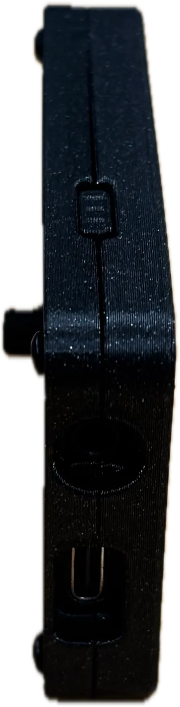
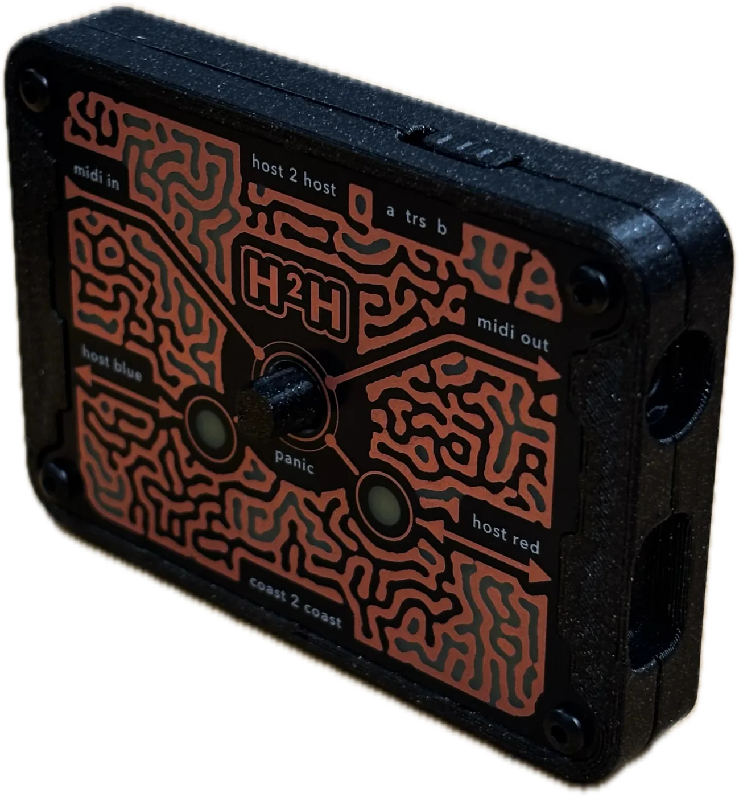

01host 2 host
Two computers
Each computer sees a class compliant USB MIDI port, H2H Blue on the left, H2H Red on the right. No driver. What one sends, the other receives.
MIDI IN goes to both computers. MIDI OUT plays both computers and MIDI IN.
Edition of 20
A MIDI interface for two computers.
H2H connects two computers over USB MIDI and gives both MIDI in and out. I built it for norns to sequence Ableton. It works with many other setups.
Ready.
01host 2 host
Each computer sees a class compliant USB MIDI port, H2H Blue on the left, H2H Red on the right. No driver. What one sends, the other receives.
MIDI IN goes to both computers. MIDI OUT plays both computers and MIDI IN.
02routing
Pick a source and play. The routing and the lights follow the firmware.
03midi in, host blue / midi out, host red
042 cables / 1 cable
Two computers on one audio interface can hum through a shared ground. On 2 cables, each side runs from its own computer and the grounds stay apart.
On 1 cable, one USB port powers both sides. With a phone charger alone, MIDI IN plays to MIDI OUT.
05a trs b
MIDI on a 3.5 mm jack comes in two wirings. The switch beside MIDI OUT sets the type, also while H2H runs. The red light blinks white once for A, twice for B.
MIDI IN takes both types through a diode bridge.
06panic
One press ends stuck notes. H2H sends note off for each held note, then sustain off, all sound off and all notes off, on all 16 channels. Both computers and MIDI OUT receive it.
The red light holds white for 400 ms.
07coast 2 coast
08lights
One light per module, under a window in the top plate. Press a row to see it.
photos




Update the firmware and test every port from the browser. Chrome or Edge, on a computer.
H2H is not a product. I built a few, and now and then one is spare. If you want one, ask on GitHub and I will tell you if one is left.